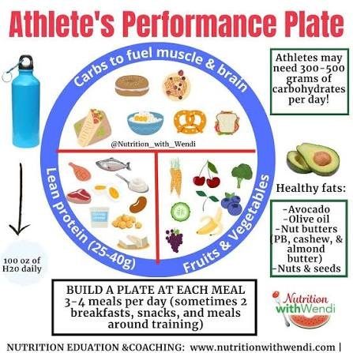

วิชาพลศึกษา

โภชนาการสำหรับนักกีฬาไม่ใช่เพียงแค่การรับประทานอาหารให้อิ่มท้อง แต่เป็นการวางแผนสารอาหารเชิงลึกเพื่อให้ร่างกายได้รับพลังงานและฟื้นฟูได้อย่างรวดเร็ว คาร์โบไฮเดรตเชิงซ้อนถูกใช้เป็นแหล่งพลังงานหลักในการสะสมไกลโคเจน โปรตีนทำหน้าที่ซ่อมแซมกล้ามเนื้อส่วนที่สึกหรอจากการฝึกซ้อมหนัก และน้ำรวมถึงเกลือแร่ช่วยรักษาสดดุลของเหลวในร่างกาย การจัดการสารอาหารเหล่านี้ให้เหมาะสมกับช่วงเวลาก่อน ระหว่าง และหลังการแข่งขันจึงเป็นปัจจัยชี้ขาดระหว่างชัยชนะและความพ่ายแพ้